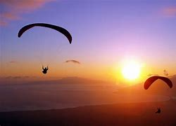
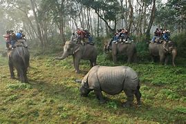

Kathmandu is the capital and largest city of Nepal, with a population of around 1 million. The city stands at an elevation of approximately 1,400 metres (4,600 feet) above sea level in the bowl-shaped Kathmandu Valley in central Nepal. The valley was historically called the "Nepal Mandala" and has been the home of the Newar people, a cosmopolitan urban civilization in the Himalayan foothills. The city was the royal capital of the Kingdom of Nepal and hosts palaces, mansions and gardens of the Nepalese aristocracy. It has been home to the headquarters of the South Asian Association for Regional Cooperation (SAARC) since 1985. Today, it is the seat of government of the Nepalese republic, established in 2008, and is part of the Bagmati Province. Kathmandu is and has been for many years the centre of Nepal's history, art, culture, and economy. It has a multi-ethnic population within a Hindu and Buddhist majority. Religious and cultural festivities form a major part of the lives of people residing in Kathmandu. Tourism is an important part of the economy in the city. In 2013, Kathmandu was ranked third among the top ten upcoming travel destinations in the world by TripAdvisor, and ranked first in Asia.
The city is considered the gateway to the Nepalese Himalayas and is home to several World Heritage Sites: the Durbar Square, Swayambhunath, Boudhanath and Pashupatinath. Kathmandu valley is growing at 4 percentage per year according to the World Bank in 2010, making it one of the fastest-growing metropolitan areas in South Asia, and the first region in Nepal to face the unprecedented challenges of rapid urbanization and modernization at a metropolitan scale. Historic areas of Kathmandu were severely damaged by a 7.8 magnitude earthquake in April 2015. Some of the buildings have been restored while some remain in the process of reconstruction.
Paragliding
Paragliding is the recreational and competitive adventure sport of flying paragliders: lightweight, free-flying, foot-launched glider aircraft with no rigid primary structure. The pilot sits in a harness or lies supine in a cocoon-like 'speed bag' suspended below a fabric wing. Wing shape is maintained by the suspension lines, the pressure of air entering vents in the front of the wing, and the aerodynamic forces of the air flowing over the outside. Despite not using an engine, paraglider flights can last many hours and cover many hundreds of kilometres, though flights of one to two hours and covering some tens of kilometres are more the norm. By skillful exploitation of sources of lift, the pilot may gain height, often climbing to altitudes of a few thousand metres.
chitwan national park
Chitwan National Park is the first national park in Nepal. It was established in 1973 and granted the status of a World Heritage Site in 1984. It covers an area of 952.63 km² and is located in the subtropical Inner Terai lowlands of south-central Nepal in the districts of Nawalpur, Parsa, Chitwan and Makwanpur. In altitude it ranges from about 100 m in the river valleys to 815 m in the Churia Hills.Since the end of the 19th century Chitwan – Heart of the Jungle – used to be a favorite hunting ground for Nepal's ruling class during the cool winter seasons. Until the 1950s, the journey from Kathmandu to Nepal's south was arduous as the area could only be reached by foot and took several weeks. Comfortable camps were set up for the feudal big game hunters and their entourage, where they stayed for a couple of months shooting hundreds of tigers, rhinoceroses, leopards and sloth bears.
Bungee jumping
Bungee jumping , also spelled bungy jumping, is an activity that involves a person jumping from a great height while connected to a large elastic cord. The launching pad is usually erected on a tall structure such as a building or crane, a bridge across a deep ravine, or on a natural geographic feature such as a cliff. It is also possible to jump from a type of aircraft that has the ability to hover above the ground, such as a hot-air-balloon or helicopter. The thrill comes from the free-falling and the rebound. When the person jumps, the cord stretches and the jumper flies upwards again as the cord recoils, and continues to oscillate up and down until all the kinetic energy is dissipated.